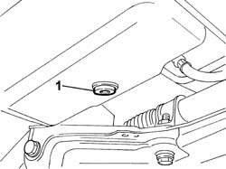
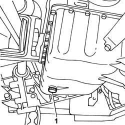
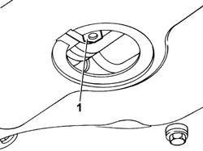

1020A30 ENGINE OIL DRAIN PLUG - REPLACE
- Path
- Procedures > 10 ENGINE UNIT > 1020 CRANKCASE SUMP AND COVERS > 1020A CRANK CASE OIL SUMP > 1020A30 ENGINE OIL DRAIN PLUG - REPLACE
- Kind
- repair procedure (removal / refitting; the operation number is the code)
- Applies to
- all engines; all production periods
- Interactive page
- https://sloeber94.github.io/elrnDB-fDct/en/#/244000655
Applies to: all engines; all production periods
 Removing
Removing
 Refitting
Refitting- Position the vehicle on a lift.
Op. 7055B54 UNDER-ENGINE GUARD - R R
- Place a container to collect the oil beneath the oil sump.
1. Unscrew the drain plug and colllect the oil in the container.

Applies to: all engines; all production periods
Refitting
Removing- Replace the gasket with another of the same size and equal profile.
- Fit the drain plug into the threaded seat on the sump and tighten to torque.
 | Value - daNm | Fastening | Component | Ø |
|---|---|---|---|---|
. | - | Plug | ENGINE OIL DRAIN PLUG | - |
Op. 0010T10 ENGINE OIL CHECK LEVEL AND TOP UP
Op. 7055B54 UNDER-ENGINE GUARD - R R
- Remove the vehicle from the lift.
Applies to: engines: 2.0 16V; all production periods
Removing
RefittingOp. 7055B54 UNDER-ENGINE GUARD - R R
1. Undo the engine oil drain plug.
- Collect the oil in suitable container.

Applies to: engines: 2.0 16V; all production periods
Refitting
Removing- Tighten the enigne oil drain plug to torque.
Applies to: engines: 2.8 JTD 8V; all production periods
Removing
Refitting- Place the vehicle on a lift.
- Raise the lift.
1. Undo the engine oil drain plug.
- Collect the oil in suitable container.
Applies to: engines: 2.8 JTD 8V; all production periods
Refitting
Removing- Tighten the enigne oil drain plug to torque.
Applies to: engines: 2.0 JTD 8V; all production periods
Removing
Refitting- Position the vehicle on a lift.
- Place a container to collect the oil beneath the oil sump.
1. Unscrew the drain plug and colllect the oil in the container.

Applies to: engines: 2.0 JTD 8V; all production periods
Refitting
Removing- Replace the gasket with another of the same size and equal profile.
- Fit the drain plug into the threaded seat on the sump and tighten to torque.
Op. 0010T10 ENGINE OIL CHECK LEVEL AND TOP UP
Op. 7055B54 UNDER-ENGINE GUARD - R R
- Remove the vehicle from the lift.